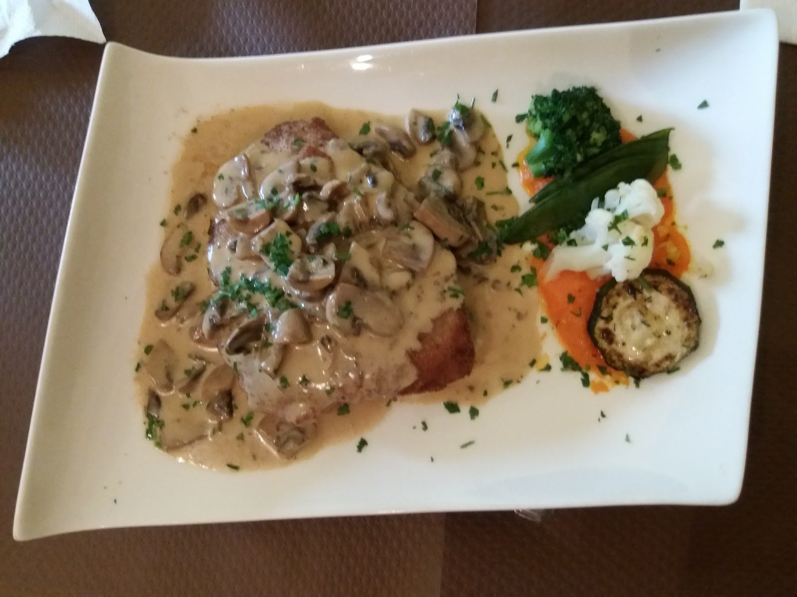
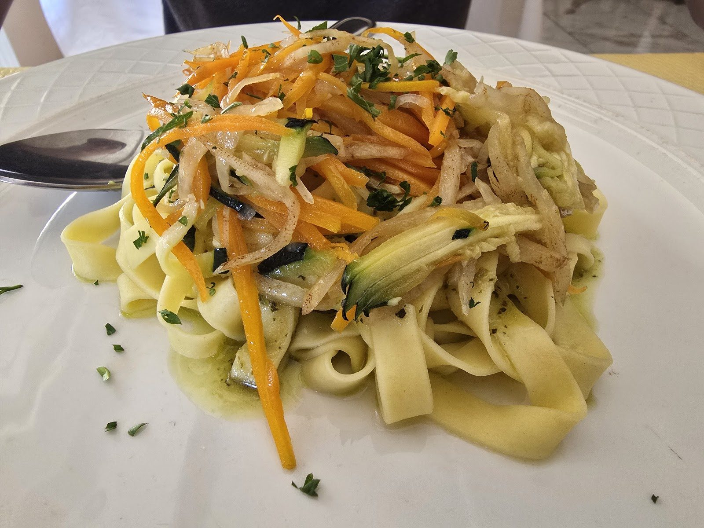
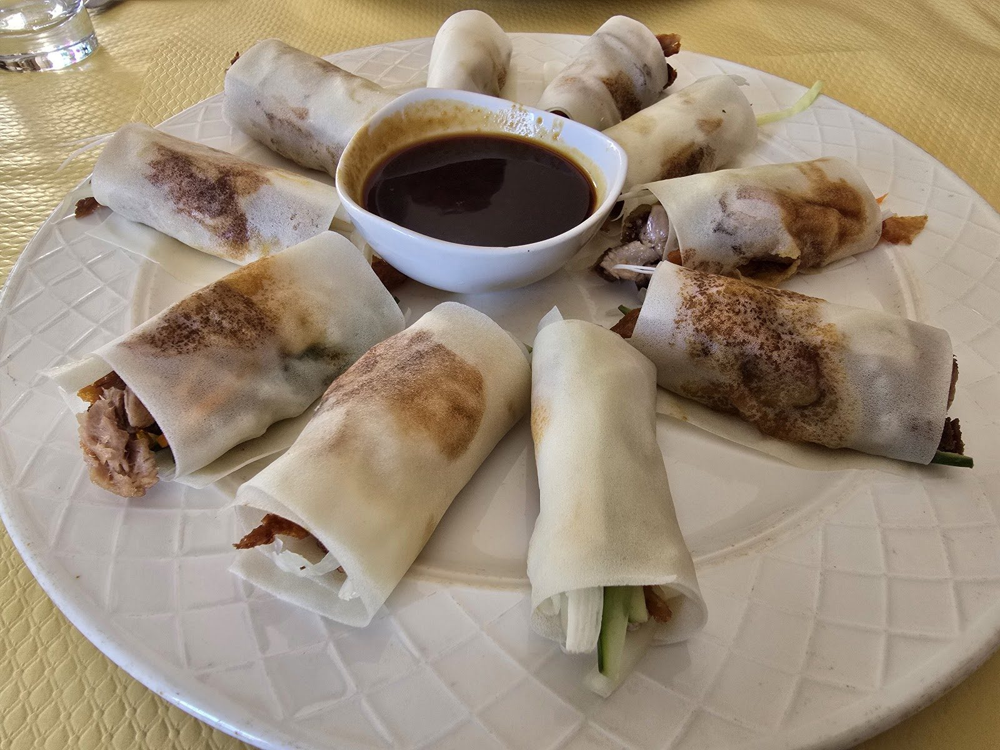
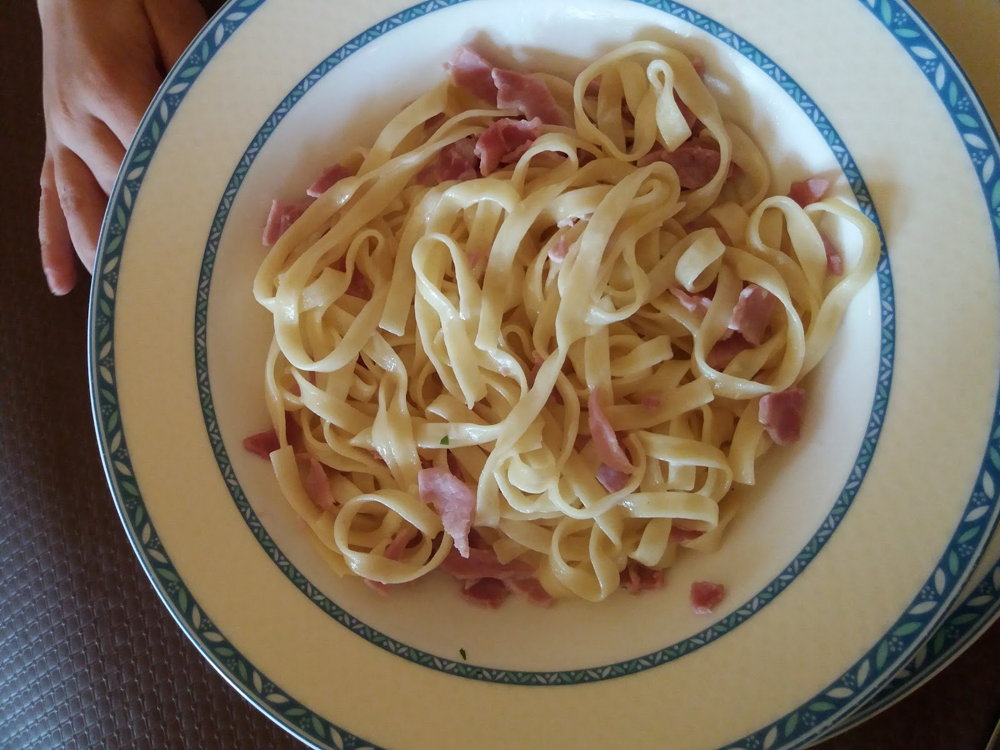
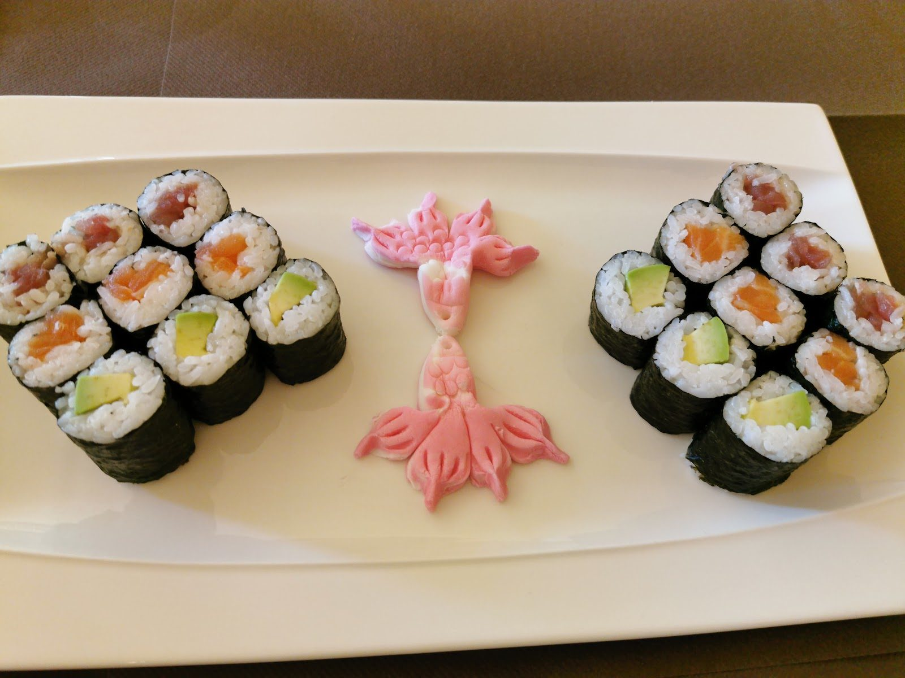

Auberge Roudbaachtoutes les envies, une seule adresse
Sushi et maki, classiques français, pâtes et desserts, dans une auberge de village avec sa terrasse au soleil.
Une auberge de campagne à Préizerdaul où la même cuisine prépare les sushis, les classiques français et les pâtes.
Une cuisine, quatre envies
On ne choisit pas son camp : la même cuisine fait les maki, l'escalope sauce forestière, les tagliatelles et les desserts.

Sushi & maki
Nigiri, maki, California, sashimi, temaki : la carte japonaise, sur place ou à emporter.

Les classiques
Escalope de veau ou de porc, sauce forestière aux champignons, grillades et brochettes — la cuisine française et luxembourgeoise, généreuse.

Les pâtes
Tagliatelles carbonara ou aux légumes.

Les desserts
Crème brûlée, assiette gourmande, fruits frais et fromage.
Le soleil traversela campagne.
Une grande terrasse abritée par la pergola et les voiles d'ombrage, des tables espacées, la campagne de Préizerdaul autour.

De la salle à l'assiette
La salle à nappes blanches et, à table, du plateau de sushi au bol de soupe miso.





Ce qu'on sert
Les grandes familles de la carte.